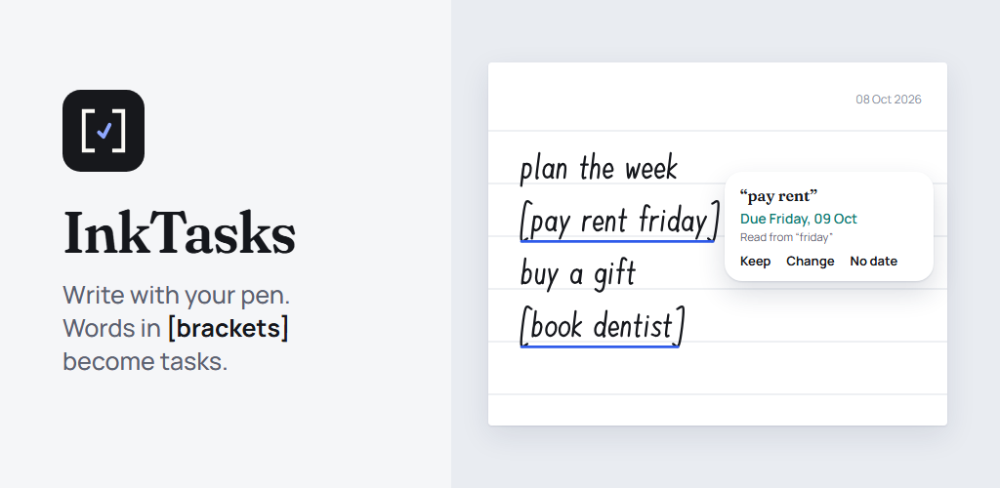

InkTasks

Your handwriting, organised. InkTasks is a notebook for your stylus where to-dos write themselves.
Write naturally, capture tasks as you go
Take notes by hand, exactly as on paper. Put anything in square brackets — [call the bank friday] — and it becomes a task. InkTasks reads the date you wrote too: "friday", "tomorrow", "in 3 days", "every monday".
One list for everything you wrote
Every bracket from every note lands in one to-do list, sorted into overdue, today and upcoming. Tick a task and it's crossed out in your note. Tap a task to jump straight back to where you wrote it.
Reminders and your calendar
Set a reminder on any task, get a daily summary of what's due, and sync your tasks to the calendar you already use.
A notebook that feels like paper
Pen, marker, highlighter and eraser. Ruled, grid, dotted or blank pages in soft colours. Add pictures and move them around, import a PDF and write on it, export any note as a PDF.
Folders, search and a recycle bin
File notes into folders, find them by title, and get a deleted note back within 30 days.
Private by design
Your notes stay on your device. Handwriting is recognised on the device, never uploaded. Back up your whole library to a file whenever you like — to the device or the cloud storage you choose.
Subscription
Try everything free for one month. After that, InkTasks is a subscription, monthly or yearly; the prices are shown in the app before you subscribe. Cancel any time in Google Play. Without a subscription you can still read every note and tick tasks off — your notes are never locked away.
Made for Android tablets with a stylus, such as the Samsung Galaxy Tab with S Pen.
Terms: https://inktasks.com/terms · Privacy: https://inktasks.com/privacy